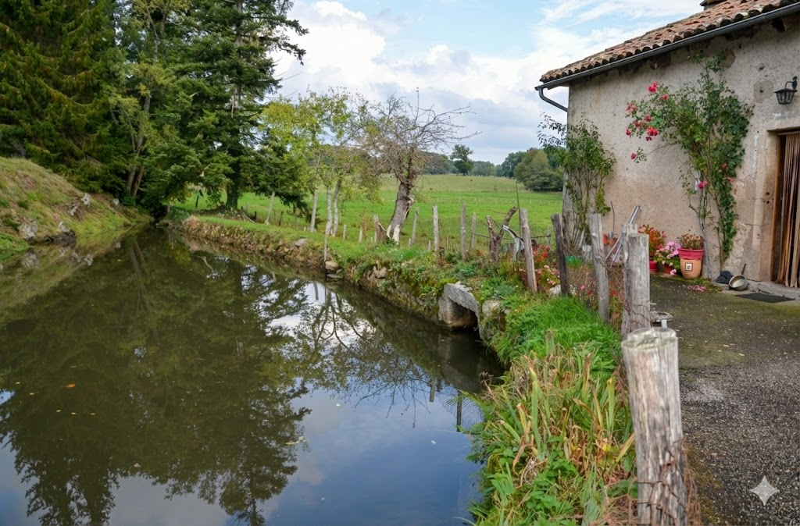

[Image: prat1.jpg]Localisation & Histoire
Ce moulin a été construit vraisemblablement au milieu du 18ème siècle (1745 sur un linteau) est situé à BESSONIES sur l'OMBRE aux confins de Midi-Pyrénées, aux portes de l'Auvergne, dans un cadre rural très protégé. Il a cessé de fonctionner en 1990.
Il est particulièrement représentatif de l'économie rurale du XIXème siècle et de la première partie du XXème siècle avec son équipement pour moudre les grains (seigle, sarrasin, maïs, avoine, orge) qui est encore en place. Dans le passé, il a été un moulin à huile. Il dégage une atmosphère exceptionnelle d'authenticité.
Détails Techniques
Traditionnellement, le moulin du PRAT travaillait à façon en livrant avec une mule la farine chez les clients. La préoccupation permanente du meunier Persouyre était d'amener de l'eau à son moulin de sorte qu'à la prise de l'eau sur l'Ombre, il a fallu ajouter une prise d'eau sur le ruisseau de Broussil venant augmenter le débit du canal d'amenée dans le bief qui mesure 50 mètres a une largeur allant en croissant d'un mètre cinquante jusqu'à neuf mètres.
L'état général du bâtiment qui abrite le moulin est bon, il souffre cependant d'un état pathologique d'humidité. A proximité se trouvent une grange et un hangar.
[Image: prat1.jpg]
'">
Le moulin est entraîné par un rouet volant en bois à cuillères (18) en excellent état qui tourne à la vitesse de 70 tours par minute. Il a été refait à l'identique en 2001. La partie motrice, bien conservée, est un témoin en état d’une technique traditionnelle simple et efficace. Sur deux paires de meules une seule fonctionne.
L'ancienne huilerie a été transformée en pressoir à pomme avec un levier. L'équipement pour moudre les grains est encore en place, en bon état, notamment la trémie et son auget.
Il y a encore, présente dans le moulin, une bluterie utilisée pour les céréales panifiables. La trompe en bois qui alimente en eau le rouet ainsi que les sommiers qui supportent les meules, ont été refaits. L'étang étant rempli en eau le moulin est susceptible de fonctionner.
Le propriétaire, âgé, n'a pas de projet particulier si ce n'est de maintenir en état ce magnifique moulin. Sa famille porte un grand intérêt à ce lieu unique en Ségala. Il faudrait cependant faire le nécessaire pour conserver ce moulin en état de marche.
Le Saviez-vous ? La Trémie
Cette sorte d’entonnoir positionné au dessus des meules à l’aide du berceau pouvait contenir environ 50 kg de blé (parfois plus encore). Le meunier déversait son blé dans la trémie et pouvait ainsi laisser travailler son moulin. Il pouvait vaquer à d’autres occupations, la sieste d’après les plus médisants.
Pour rappeler aux étourdis le travail de mouture en cours, la trémie était équipée d’un système d’alarme simple mais efficace : une pelote de chiffons reliée à une ficelle maintenant une cloche. Lorsque la trémie était presque vide, la pelote était libérée faisant ainsi basculer la cloche.
Celle-ci une fois actionnée appelait ou réveillait le meunier pour venir rajouter du grain ou arrêter sa roue. Des moulins auraient brûlé faute d’attention ! Tout le monde connaît la chanson : « Meunier tu dors, ton moulin va trop vite !...Meunier tu dors, ton moulin va trop fort ! ». En effet faute de grain entre les meules, celles-ci s’emballaient. En se frottant l’une contre l’autre, elles créaient des gerbes d’étincelles pouvant communiquer le feu au moulin.
Galerie Photos

DSC_0110.jpg 281.4 KB

DSC_0112.jpg 286.9 KB

DSC_0113.jpg 365.0 KB

DSC_0114.jpg 293.7 KB

DSC_0115-1.jpg 226.8 KB

DSC_0116-1.jpg 242.1 KB

DSC_0117.jpg 198.3 KB

DSC_0118.jpg 260.1 KB

DSC_0119.jpg 159.2 KB

DSC_0122.jpg 202.5 KB

DSC_0124.jpg 205.4 KB

DSC_0126.jpg 218.6 KB

DSC_0129-1.jpg 232.4 KB

DSC_0136.jpg 229.3 KB

DSC_0139.jpg 233.1 KB

DSC_0144.jpg 233.4 KB

DSC_0146.jpg 249.8 KB

DSC_0147.jpg 205.6 KB

DSC_0148-1.jpg 258.4 KB

DSC_0149.jpg 264.4 KB

DSC_0150.jpg 254.7 KB

DSC_0152.jpg 313.7 KB

DSC_0154.jpg 327.8 KB

DSC_0155.jpg 284.8 KB

DSC_0157.jpg 309.3 KB

DSC_0158.jpg 212.2 KB

DSC_0164.jpg 388.3 KB

DSC_0165.jpg 327.7 KB

DSC_0167.jpg 287.4 KB

DSC_0169.jpg 317.4 KB